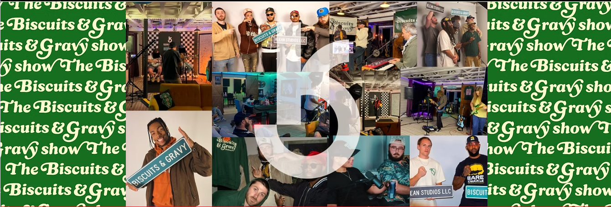
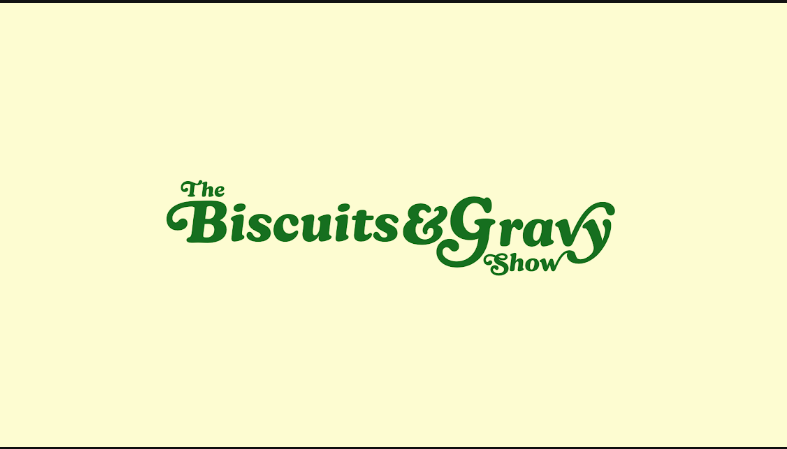
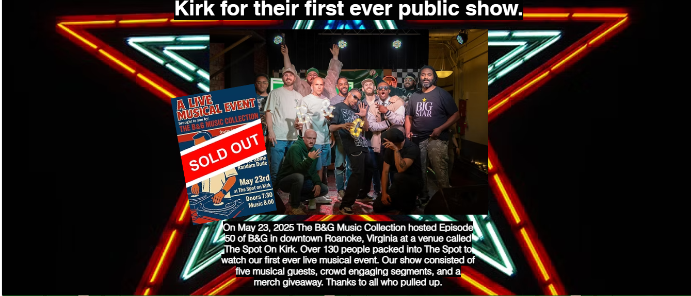
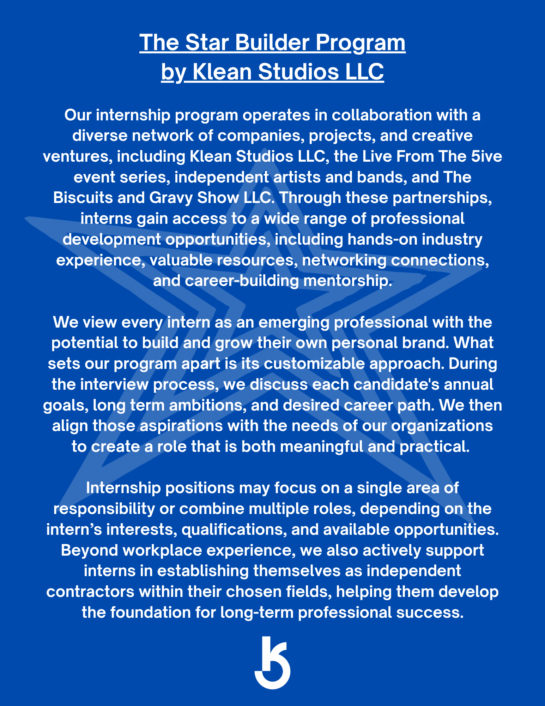

“A Beautiful Saturday”
Featuring Erin Lunsford
Pull up a chair for a fresh round of conversation and live music from one of Virginia's most compelling voices.
Open on YouTubeA high-energy variety show where live performances, honest conversations, and Southwest Virginia's creative scene all meet at the same table.

Let'sFeaturing Erin Lunsford
Pull up a chair for a fresh round of conversation and live music from one of Virginia's most compelling voices.
Open on YouTube
A Klean Studios productionBiscuits and Gravy is a weekly variety show centered around music, featuring a special guest and a live performance in every episode.
Guests are usually solo artists or bands, but the table is open to entrepreneurs, public figures, and athletes too. B&G lives in the middle ground between a podcast and a late-night talk show—mixing in-depth conversation with live performances, comedy, and the people making cool things happen across the region.

More than 130 people packed downtown Roanoke for episode 50—a five-act live musical event with crowd segments, giveaways, and the kind of energy you cannot fake.

A compilation born in Virginia's Appalachian region, collecting standout performances from the season in one extra-helping-sized release.
The hosts, cameras, producers, and creative hands keeping B&G moving.
Founder & Host
Executive Producer & Host
Co-Host & Production Assistant
1st Cameraman
Creative Director
Video Editor & Production Assistant
Community, mentorship, and a home studio help keep Biscuits & Gravy moving.

Klean Studios' customizable internship program connects emerging professionals with hands-on industry experience, mentorship, networking, and career-building opportunities through projects including The Biscuits & Gravy Show.
Read the full program detailsBiscuits & Gravy is supported by Klean Studios LLC, utilizing its recording studio and other wonderful amenities. Biscuits & Gravy would not be possible without the help of Maxwell Klean and his team at Klean Studios.
Bring your story to the table—or help keep the next serving coming.
Have a story, project, performance, or idea worth sharing? Tell the crew a little about yourself and why you belong at the table.
Put your organization alongside the conversations, performances, and people shaping the region's creative community.